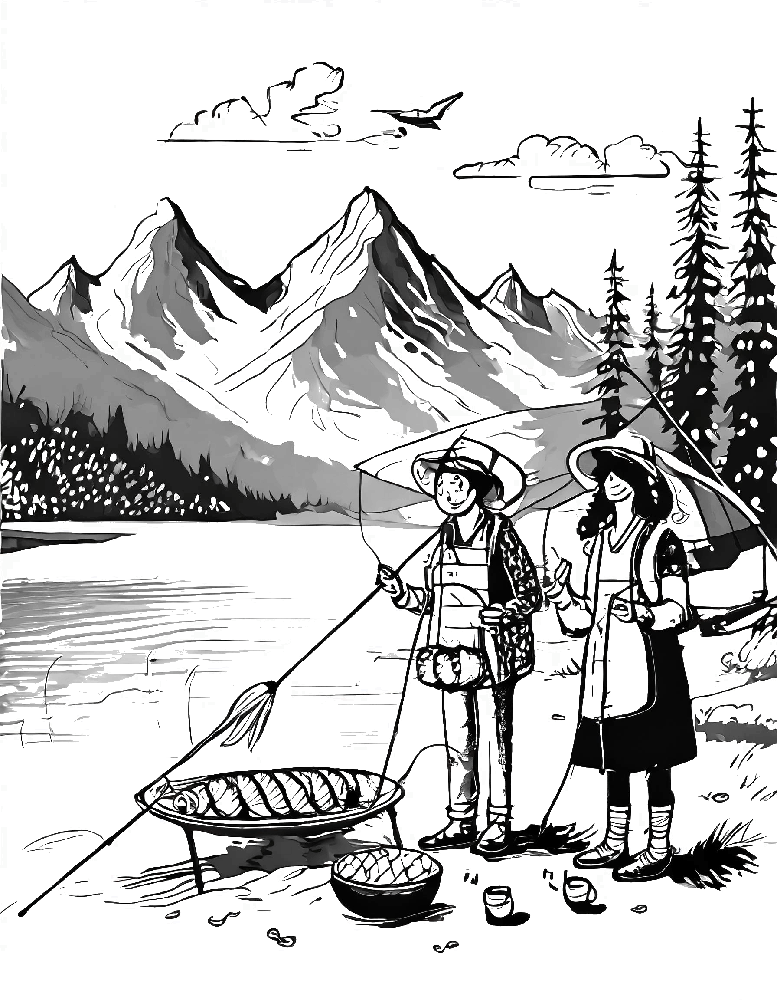
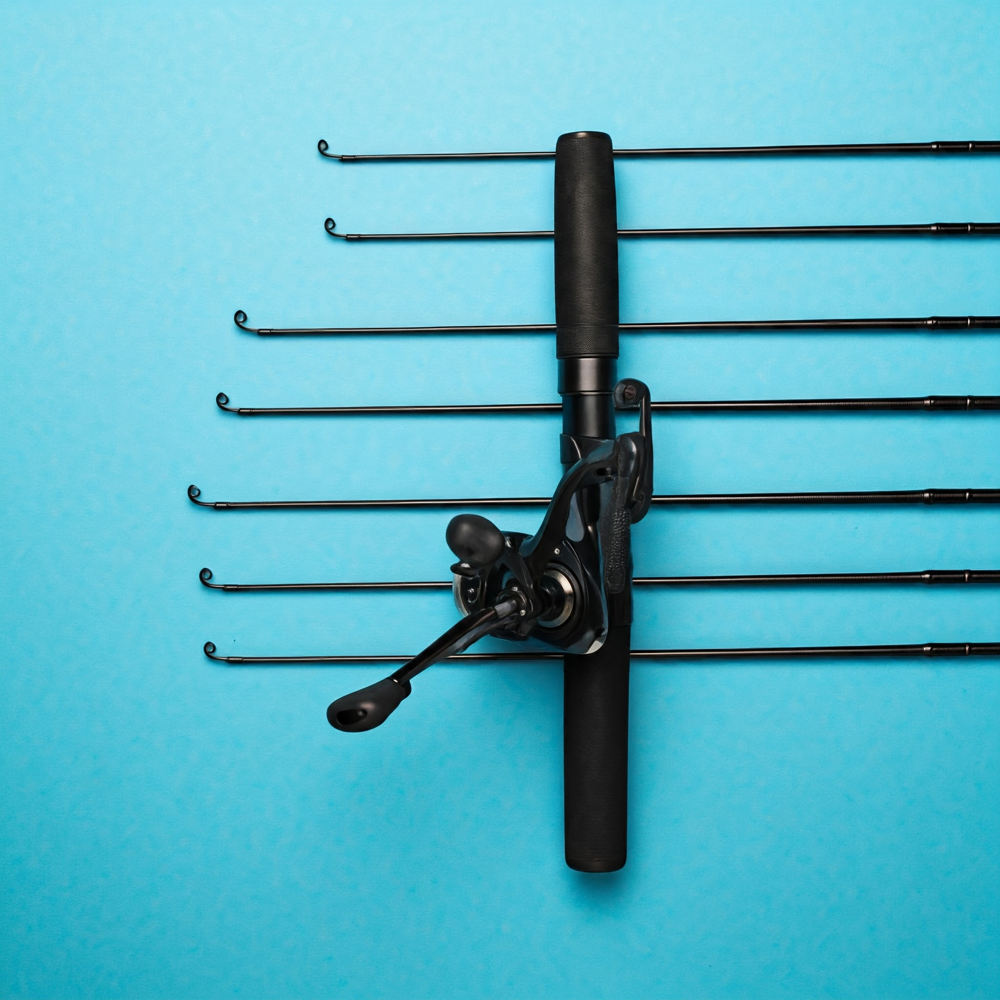
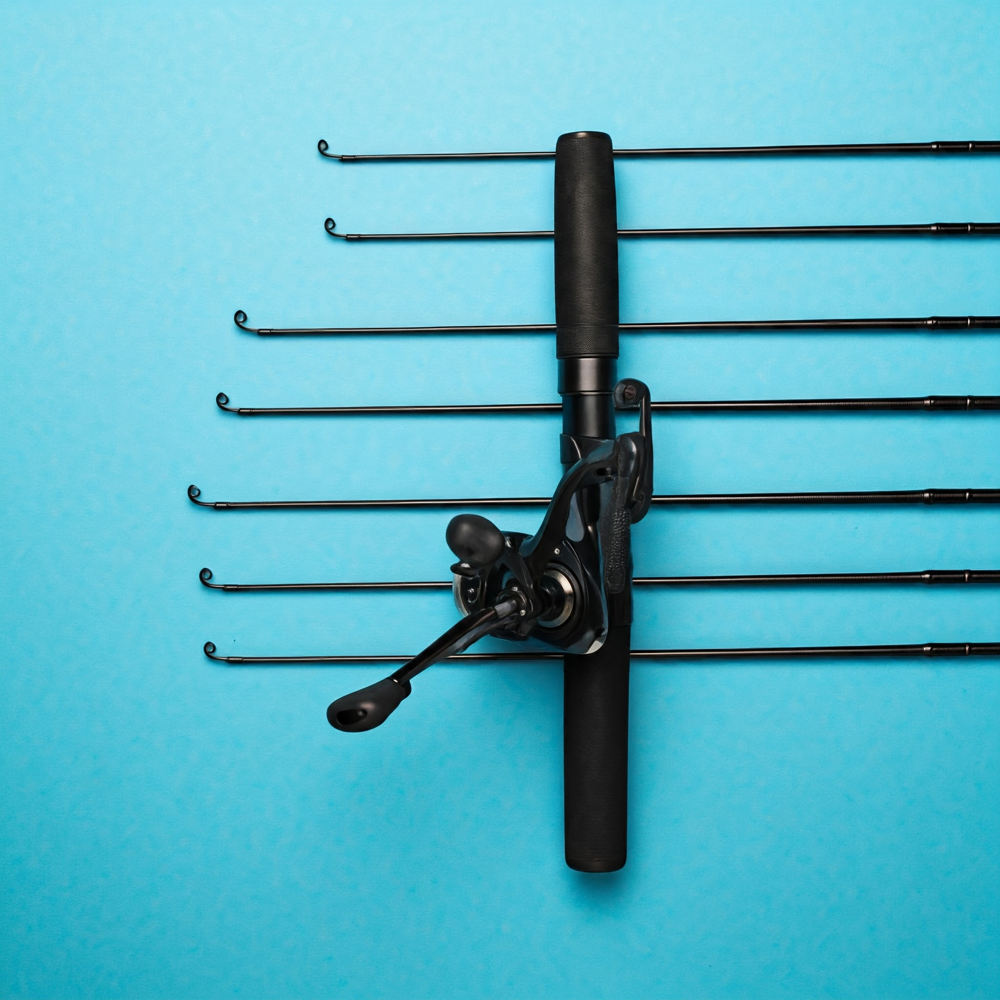
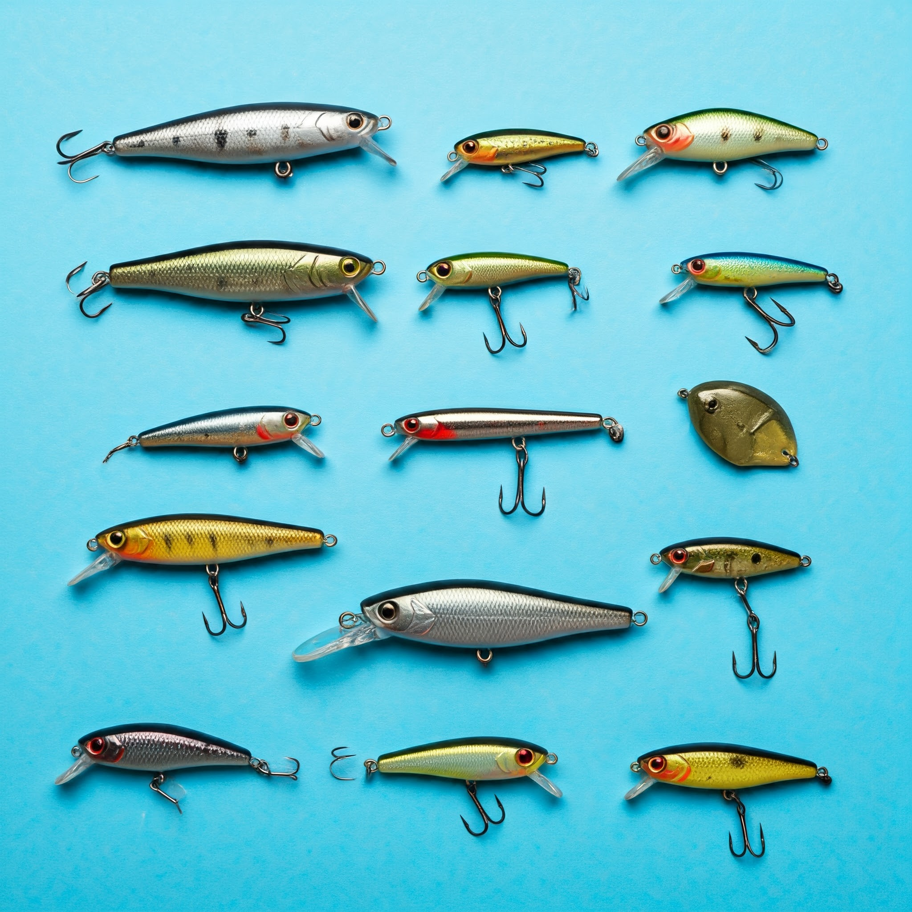
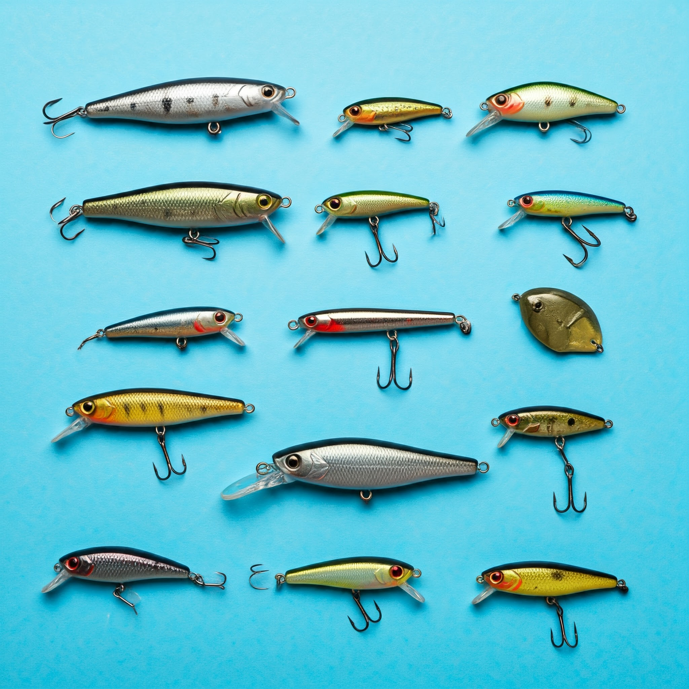

Sua jornada de pesca começa aqui!
A pesca é mais do que apenas um esporte, é uma paixão que nos conecta com a natureza.
E para viver essa experiência de forma completa, você precisa dos equipamentos certos. Na Baití, oferecemos uma ampla variedade de produtos para pescadores de todos os níveis, desde o iniciante até o pescador experiente.
Descubra a emoção de cada pescaria.
Por que escolher a Baití?
- Especialistas em pesca: Nossa equipe é formada por apaixonados por pesca que conhecem profundamente o mercado e podem te ajudar a escolher os equipamentos ideais para o seu estilo de pesca.
- Marcas renomadas: Trabalhamos com as melhores marcas do mercado, garantindo a qualidade e durabilidade dos nossos produtos.
- Variedade de produtos: Varas, molinetes, linhas, iscas, acessórios, roupas e muito mais. Tudo o que você precisa para equipar-se da cabeça aos pés.
- Conteúdo exclusivo: Acesse nosso blog e fique por dentro das últimas novidades do mundo da pesca, dicas de técnicas, locais de pesca e muito mais.
- Atendimento personalizado: Conte com nosso suporte para tirar todas as suas dúvidas e encontrar as melhores soluções para as suas necessidades.

A pesca esportiva nunca foi tão emocionante
Se você busca adrenalina e desafios, a Baití é o seu lugar.
Aqui você encontra equipamentos de alta performance para a pesca esportiva, como varas de casting, molinetes de baitcasting e iscas artificiais de última geração.
Prepare-se para a luta contra os peixes mais fortes e conquistar recordes incríveis!
Aqui você encontra equipamentos de alta performance para a pesca esportiva, como varas de casting, molinetes de baitcasting e iscas artificiais de última geração.
Prepare-se para a luta contra os peixes mais fortes e conquistar recordes incríveis!
Ofertas imperdíveis para pescadores!
 

Varas de Pesca:
Nossas varas de pesca são confeccionadas com materiais de alta resistência, proporcionando precisão e durabilidade em qualquer tipo de pescaria.
 

Iscas:
Nossa linha de iscas é completa, oferecendo uma variedade de modelos para diferentes tipos de peixes e situações de pesca.